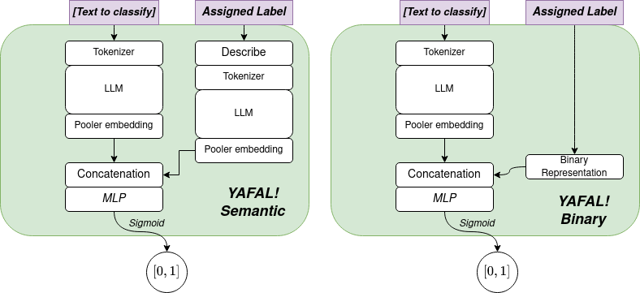

YAFAL! You Are Fake Labels!¶
Having good datasets is the main key for building good ML models. And everyone loves a good ML model. Sadly, correctly labeled datasets are scarce in practice (and I mean in the real world). Let’s assume it, Turkers often do the minimum effort possible, and wrong-labelled data happens.
YAFAL is focused for the NLP text classification tasks, it’s goal is to employ the Large Language Models (such as BERT) to exploit the semantics representation of the input, and, optionally, of the labels to improve the detection of corrupted samples.
The current backend for YAFAL! is:
Methodology & Pipeline:¶
YAFAL! implements different Regression methods to weight if a given text sample is correctly labelled or not. The output will be 1 if the sample is wrong and 0 if it’s label is correct.
The methodology is quite simple, the goal is to learn to relate a Large Language Model’s representation (e.g. BERT) and the label representation, to detect miss-labeled samples.
YAFAL! can handle two different label representations:
Binary: the labels are represented as a binary vector of 1’s and 0’s
Semantic: the labels are described as a list of texts, which will be transformed into a distributed semantic representation using a LLM.
Pipeline¶
The following pipeline is used to train a YAFAL classifier (under the API):
The text samples are added to a YAFAL Dataset object
A YAFALLabelEncoder is instantiated over the received corpus
The DatasetCorruptor randomly creates corrupted samples and adds them to the dataset, creating a new YAFAL Dataset object.
The YAFAL Regressor is trained over the corrupted YAFAL Dataset optimizing the Binary Cross Entropy loss.
Regressors¶
Depending on which label representation method is chosen, the regression pipelines will differ slightly:
Overall, the same mechanism is used per each classification pipeline:
The received text is
Navigate to Main Classes to check the most important classes.
Examples¶
This corpus has been validated using the AG News dataset. The goal is to classify a given text in
Binary¶
import os
from yafal import YAFALDataset, YAFALRegression
from yafal.corruption import DatasetCorruptor
import pandas as pd
from sklearn.metrics import roc_auc_score, accuracy_score, precision_score, recall_score
current_dir = os.path.dirname(os.path.abspath(__file__))
train_csv_path = os.path.join(current_dir, 'data', 'train.csv')
test_csv_path = os.path.join(current_dir, 'data', 'test.csv')
train_data = pd.read_csv(train_csv_path)
test_data = pd.read_csv(test_csv_path)
topic_mapping = {1: 'world',
2: 'sports',
3: 'business',
4: 'science'}
train_yafal_dataset = YAFALDataset()
total_samples = 10000 # To make everything faster
for i, sample in train_data.iterrows():
index_label = sample['Class Index']
news_article = f"{sample['Title']}. {sample['Description']}"
train_yafal_dataset.add_sample(
text=news_article,
sample_labels=[index_label]
)
# For speedup
if i == total_samples:
break
# Train our model
print("Let's train our YAFAL Regressor")
yafal_regression = YAFALRegression(label_encoder_method="binary", verbose=True, max_epochs=10)
yafal_regression.fit(train_yafal_dataset)
# Save the model
yafal_regression.save("YAFAL_ag_semantic_model.pck")
# Test the model - Load a new YAFAL dataset for the test
test_yafal_dataset = YAFALDataset()
total_test_samples = 2000
for i, sample in train_data.iterrows():
index_label = sample['Class Index']
news_article = f"{sample['Title']}. {sample['Description']}"
test_yafal_dataset.add_sample(
text=news_article,
sample_labels=[index_label]
)
if i == total_test_samples:
break
# Corrupt the dataset
corruptor = DatasetCorruptor()
corrupted_test_dataset = corruptor.transform(test_yafal_dataset)
# Predict with our model
y_true, y_predicted = [], []
for sample, labels, is_corrupted in corrupted_test_dataset:
result = yafal_regression.predict([sample], labels=labels)
y_true.append(is_corrupted)
y_predicted.append(result.item())
y_predicted_class = [0 if predict < 0.5 else 1 for predict in y_predicted]
print('Accuracy score: {}'.format(accuracy_score(y_true, y_predicted_class)))
print('Precision score: {}'.format(precision_score(y_true, y_predicted_class)))
print('Recall score: {}'.format(recall_score(y_true, y_predicted_class)))
print('ROC AUC score: {}'.format(roc_auc_score(y_true, y_predicted)))
The results obtained after 10 epochs are:
Training Loss |
Val Loss |
Accuracy |
Precision |
Recall |
ROC AUC |
|---|---|---|---|---|---|
0.2465 |
0.2817 |
0.9490 |
0.9177 |
0.8523 |
0.9700 |
Semantic¶
As it can be seen, this module learns from examples, as done in other platforms as RASA.
import os
from yafal import YAFALDataset, YAFALRegression
from yafal.corruption import DatasetCorruptor
import pandas as pd
from sklearn.metrics import roc_auc_score, accuracy_score, precision_score, recall_score
current_dir = os.path.dirname(os.path.abspath(__file__))
train_csv_path = os.path.join(current_dir, 'data', 'train.csv')
test_csv_path = os.path.join(current_dir, 'data', 'test.csv')
train_data = pd.read_csv(train_csv_path)
test_data = pd.read_csv(test_csv_path)
topic_mapping = {1: 'world',
2: 'sports',
3: 'business',
4: 'science'}
train_yafal_dataset = YAFALDataset()
total_samples = 10000 # To make everything faster
for i, sample in train_data.iterrows():
index_label = sample['Class Index']
string_label = topic_mapping[index_label]
news_article = f"{sample['Title']}. {sample['Description']}"
train_yafal_dataset.add_sample(
text=news_article,
sample_labels=[string_label]
)
# For speedup
if i == total_samples:
break
# Train our model
print("Let's train our YAFAL Regressor")
yafal_regression = YAFALRegression(label_encoder_method="semantic", verbose=True, max_epochs=10)
yafal_regression.fit(train_yafal_dataset,
descriptors={"world": ["politics", "international", "global", "world"],
"sports": ["soccer", "basketball", "sport", "workout", "gym"],
"business": ["economics", "trade", "money", "business"],
"science": ["science", "technology", "innovation", "research"]})
# Save the model
yafal_regression.save("YAFAL_ag_semantic_model.pck")
# Test the model - Load a new YAFAL dataset for the test
test_yafal_dataset = YAFALDataset()
total_test_samples = 2000
for i, sample in train_data.iterrows():
index_label = sample['Class Index']
string_label = topic_mapping[index_label]
news_article = f"{sample['Title']}. {sample['Description']}"
test_yafal_dataset.add_sample(
text=news_article,
sample_labels=[string_label]
)
if i == total_test_samples:
break
# Corrupt the dataset
corruptor = DatasetCorruptor()
corrupted_test_dataset = corruptor.transform(test_yafal_dataset)
# Predict with our model
y_true, y_predicted = [], []
for sample, labels, is_corrupted in corrupted_test_dataset:
result = yafal_regression.predict([sample], labels=labels)
y_true.append(is_corrupted)
y_predicted.append(result.item())
y_predicted_class = [0 if predict < 0.5 else 1 for predict in y_predicted]
print('Accuracy score: {}'.format(accuracy_score(y_true, y_predicted_class)))
print('Precision score: {}'.format(precision_score(y_true, y_predicted_class)))
print('Recall score: {}'.format(recall_score(y_true, y_predicted_class)))
print('ROC AUC score: {}'.format(roc_auc_score(y_true, y_predicted)))
The results obtained after 10 epochs are:
Training Loss |
Val Loss |
Accuracy |
Precision |
Recall |
ROC AUC |
|---|---|---|---|---|---|
0.2177 |
0.2194 |
0.9269 |
0.8682 |
0.7986 |
0.9516 |
Surprisingly, the validation error is lower in the Semantic version but the achieved results are slightly worse.
Future work & Open tasks¶
Currently, these are the existing limitations and things to do, help is appreciated:
Multi-label fake-label detection is only supported for the “binary” encoding method.
- Dataset Corruption:
No data-conditioning exists, i.e. P(X, Y_corrupt) = P(X)P(Y_corrupt)
There is no method to take into account a label-corruption confusion matrix: P(y_c | y))
Export to ONNX yet to be done
Sphinx Documentation
YAFALDocumentHandler
Test it on GPU settings
More validations
Unit testing (in progress)
Integration testing (in progress)
Contents¶
Contents: